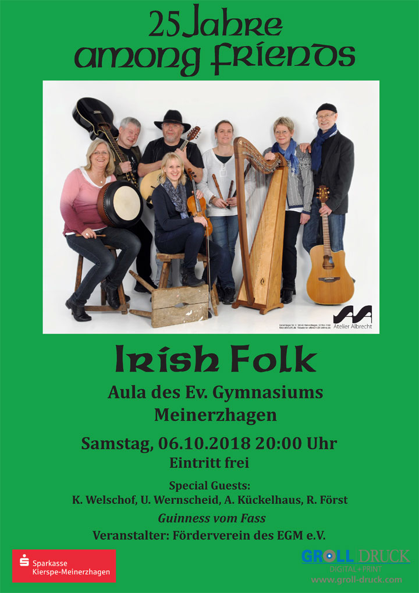

 Seit 1993 gibt es uns, die Gruppe Among Friends aus Meinerzhagen (NRW). Wir spielen irische Musik. Unser Repertoire reicht dank der achtköpfigen, vielseitigen Besetzung von Carolan’s Harfenstücken der Barockzeit bis zu Liedern zeitgenössischer Songwriter.
Unsere nächsten Auftritte:
25 Jahre Among Friends am Samstag, 6. Oktober 2018 um 20:00 Uhr in der Aula des Evangelischen Gymnasiums Meinerzhagen
mehr Informationen…
Alles über zukünftige und vergangene Auftritte erfahren Sie auf einer eigenen Seite.